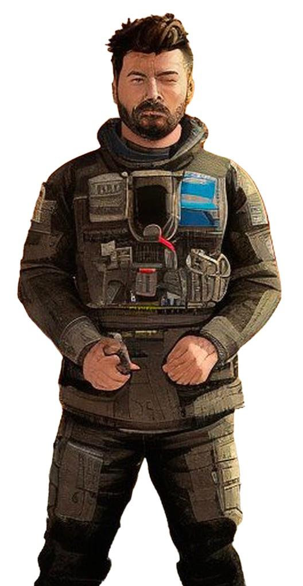
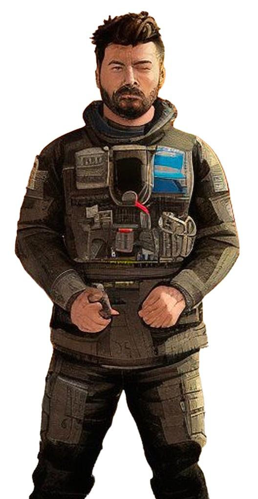

Hi,
my name isWilliam Bebiano
and I'm a Web Developer.
Experience

I worked for more than eight years in Automotive and Aerospace industries in the quality area, the scope of work is focused on improving production processes and products, aiming at customer satisfaction and adding value. I got a lot of experience with direct contact with customers and suppliers, solving problems and finding a solution. I developed a project to implement the MES in production with a large team, where I had a lot of contact with the IT area, together with the program developers, we implemented a system that measures availability, machine performance and process quality. I believe I can add a lot of value to the company, I am a very focused and dedicated professional.
Projects
 


Contact Me
Feel free to contact me for any project or job opportunities. You can reach me at william.bebiano@hotmail.com or find me on LinkedIn.